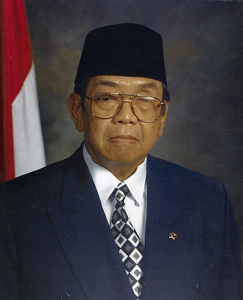

Ayo kenali dasar negara Indonesia!
PANCASILA
| 1. | KETUHANAN YANG MAHA ESA |
| 2. | KEMANUSIAAN YANG BERADIL DAN BERADAB |
| 3. | PERSATUAN INDONESIA |
| 4. | KERAKYATAN YANG DIPIMPIN OLEH HIKMAT KEBIJAKSANAAN DALAM PERMUSYAWARATAN/PERWAKILAN |
| 5. | KEADILAN SOSIAL BAGI SELURUH RAKYAT INDONESIA |
DAFTAR PRESIDEN INDONESIA
| No. | Nama | Gambar |
|---|---|---|
| 1. | Soekarno | |
| 2. | Soeharto |

|
| 3. | Bacharuddin Jusuf Habibie |

|
| 4. | Abdurrahman Wahid |  |
| 5. | Megawati Soekarnoputri |

|
| 6. | Susilo Bambang Yydhoyono |

|
| 7. | Joko Widodo |
DAFTAR WAKIL PRESIDEN INDONESIA
| No. | Nama | Gambar |
|---|---|---|
| 1. | Mohammad Hatta |  |
| 2. | Hamengkubuwana IX |  |
| 3. | Adam Malik |  |
| 4. | Umar Wirahadikusumah |  |
| 5. | Soedharmono |  |
| 6. | Try Sutrisno |  |
| 7. | Bacharuddin Jusuf Habibie |
|
| 8. | Megawati Soekarnoputri | |
| 9. | Hamzah Haz |  |
| 10. | Jusuf Kalla |  |
| 11. | Boediono |  |
| 12. | Ma'ruf Amin |  |
DAFTAR PROVINSI DI INDONESIA
| No. | Provinsi | Ibukota |
|---|---|---|
| 1. | Nanggroe Aceh Darussalam | Banda Aceh |
| 2. | Sumatera Utara | Medan |
| 3. | Sumatera Selatan | Palembang |
| 4. | Sumatera Barat | Padang |
| 5. | Bengkulu | Bengkulu |
| 6. | Riau | Pekanbaru |
| 7. | Kepulauan Riau | Tanjung Pinang |
| 8. | Jambi | Jambi |
| 9. | Lampung | Bandar Lampung |
| 10. | Bangka Belitung | Pangkal Pinang |
| 11. | Kalimantan Timur | Samarinda |
| 12. | Kalimantan Barat | Pontianak |
| 13. | Kalimantan Tengah | Palangkaraya |
| 14. | Kalimantan Selatan | Banjarbaru |
| 15. | Kalimantan Utara | Tanjung Selor |
| 16. | DKI Jakarta | Jakarta |
| 17. | Banteng | Serang |
| 18. | Jawa Barat | Bandung |
| 19. | Jawa Tengah | Semarang |
| 20. | DI Yogyakarta | Yogyakarta |
| 21. | Jawa Timur | Surabaya |
| 22. | Bali | Denpasar |
| 23. | Nusa Tenggara Barat | Mataram |
| 24. | Nusa Tenggara Timur | Kupang |
| 25. | Sulawesi Utara | Manado |
| 26. | Sulawesi Barat | Mamuju |
| 27. | Sulawesi Tengah | Palu |
| 28. | Gorontalo | Gorontalo |
| 29. | Sulawesi Tenggara | Kendari |
| 30. | Sulawesi Selatan | Makassar |
| 31. | Maluku Utara | Ternate |
| 32. | Maluku | Ambon |
| 33. | Papua Barat | Manokwari |
| 34. | Papua | Jayapura |
| 35. | Papua Selatan | Merauke |
| 36. | Papua Tengah | Nabire |
| 37. | Papua Pegunungan | Jayawijaya |